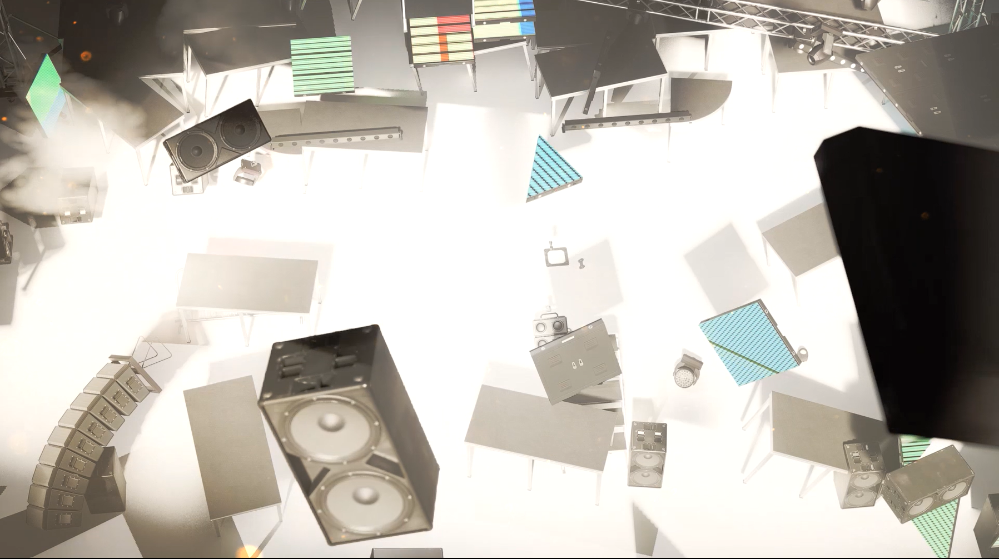
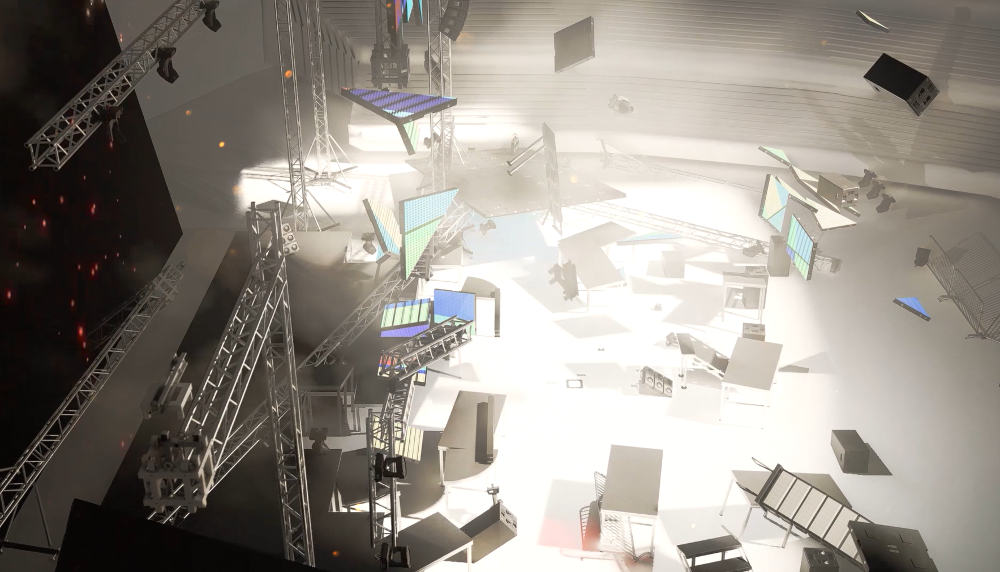
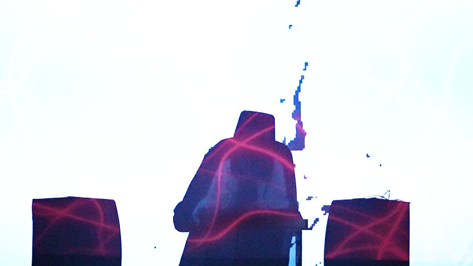
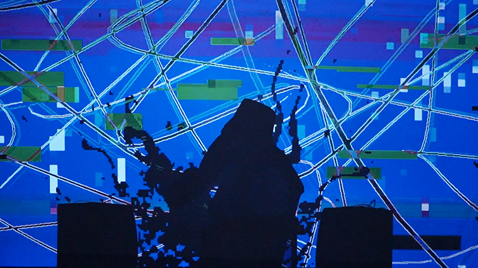
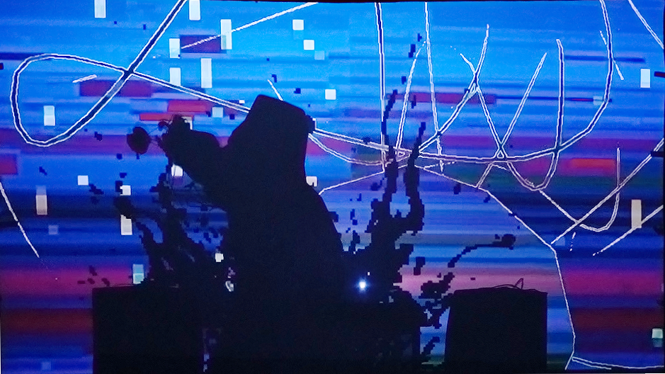

創作主題是網路出現表演者為博取觀眾關注自我傷害的行為，隔著螢幕削弱我們對表演者的同情心，於是發展成表演者刺激觀眾注意力的手段，加上有些黑色幽默的敘事，投影幕後的暴力為我們這次的表演主題。
導演、提案人與總監，並同時負責技術執行與動態視覺設計。
擔任音樂總監、表演者與舞台搭建。
正投影投影動畫，背投影音像表演類似「轉播」的影像節奏，動畫片段和現場切換
當正投影時不會看見表演者，而背投影能看見表演者影子的輪廓，創造彷彿隔著螢幕的空間
劇情動畫是一座爆炸的舞台之前的電音派對。
為了這場表演的荒謬性最後表演者會「爆炸」。